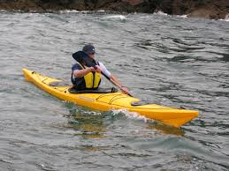
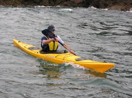

The Beautiful Punta Cana;
Punta Cana lies on the eastern shore of Dominican Republic right between the Atlantic Ocean and the Caribbean sea. Punta Cana shares the island of Hispaniola with Haiti having a border of 360 km.Although Punta Cana is no bigger than a small hamlet near the airport, people refer to the entire East Coast of Dominican by this name while the smaller regions from north to South are;Uvero Alto & Macao, Arena Gorda, Bavaro, El Cortecito, Cabeza de Toro, Punta Cana and Cap Cana.Punta Cana is a municipal district in Dominican Republic.The majority of Punta Cana speaks spanish but many of them speak english especially at tourist attractions. Punta Cana, the easternmost tip of the Dominican Republic, abuts the Caribbean Sea and the Atlantic Ocean. It's a region known for its 32km stretch of beaches and clear waters. The Bavaro area and Punta Cana combine to form what's known as La Costa del Coco, or the Coconut Coast, an area of lavish, all-inclusive resorts. It's popular for zip-lining, windsurfing, kayaking and sailing.
 

Punta Cana is a municipal district in Dominican Republic.The majority of Punta Cana speaks spanish but many of them speak english especially at tourist attractions. Punta Cana, the easternmost tip of the Dominican Republic, abuts the Caribbean Sea and the Atlantic Ocean. It's a region known for its 32km stretch of beaches and clear waters. The Bavaro area and Punta Cana combine to form what's known as La Costa del Coco, or the Coconut Coast, an area of lavish, all-inclusive resorts. It's popular for zip-lining, windsurfing, kayaking and sailing.